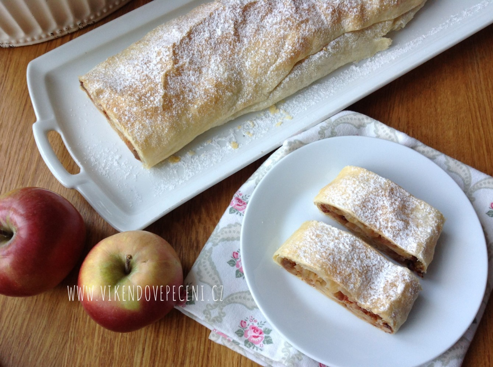

Jablečný štrůdl
Věci
- Plech + pečící papír
- Mísa na těsto
- Váleček
- Štětečka
- Hrníček na rozšlehané vejce
Suroviny
- 1/4 kila hladké mouky
- 8 dkg tuku (hera, enbo máslo)
- 1 vejce velikosti L
- 5 lžic teplého mléka
- 2 lžíce octa
- 1/2 mléka
Náplň
- 6 středně velkých nastrouhaných jablek
- Rozinky
- Cukr (dle kyselosti jablek)
- Mletá skořice
- Nasekané vlašské ořechy
Postup
- Do hlubší mísy odvážíme mouku
- Přidáme vejce, teplé mléko, rozpuštěný tuk a ocet
- Promícháme nejprve příborovým nožem a poté ručně promačkáme na hladké těsto
- Rozdělíme na 2 nebo 3 části a vyválíme na tenký obdélník (nezapomeneme podsypat těsto polohrubou moukou)
- Poklademe náplní z jablek
- Potřeme rozšlehaným vejcem
- Zamotáme a potřeme
- Troubu nastavíme na 175°
- Po 10 minutách potřeme vajíčkem a dopékáme 15 minut